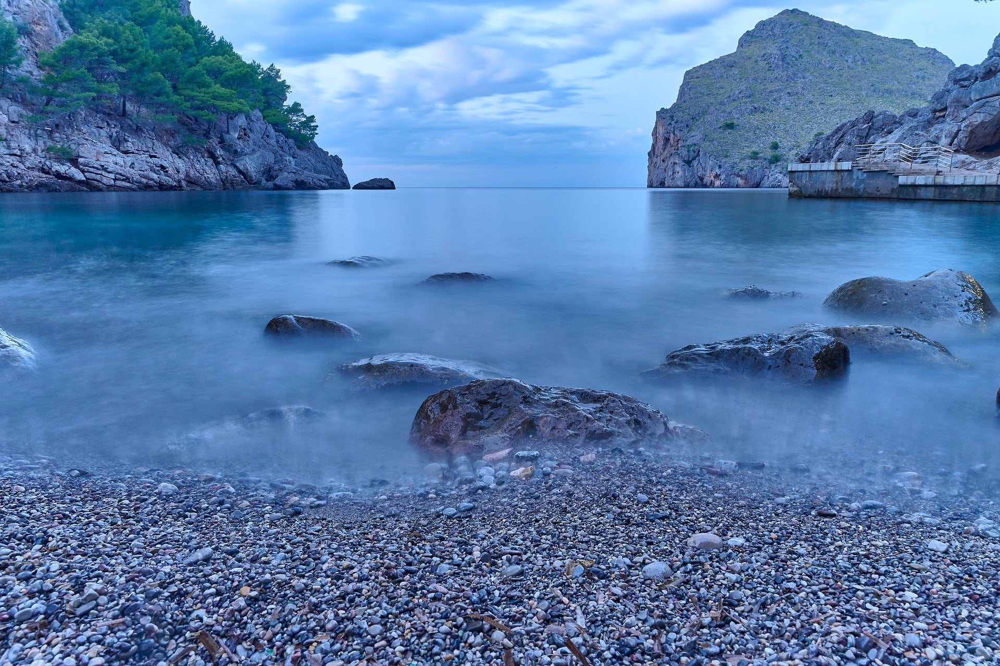

Bens Naturals a Espanya
Bens naturals destacats
Parc Nacional de Doñana (Andalusia, 1994)
Parc Nacional de Garajonay (Canàries, 1986)
Pirineus – Mont Perdut (Aragó/Navarra, 1997)
La grandesa de la naturalesa d'Espanya

Espanya natural